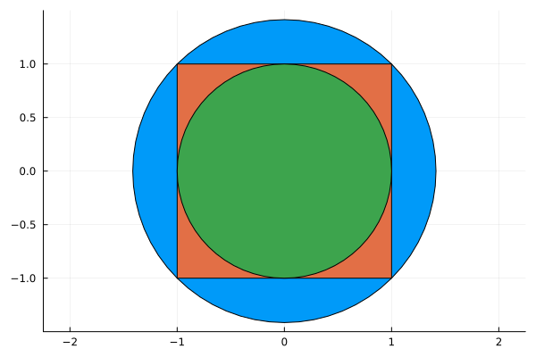
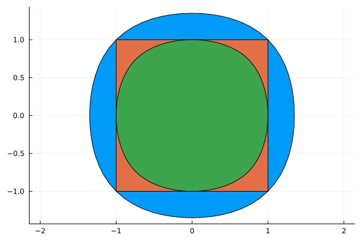

Discrete-time Invariant Set


In this example we compute the maximal (resp. minimal) invariant set contained in (resp. containing) the square with vertices $(\pm 1, \pm 1)$ for the system
\[\begin{aligned} x_{k+1} & = -y_k\\ y_{k+1} & = x_k. \end{aligned}\]
The system is $x_{k+1} = A x_k$ where
\[A = \begin{bmatrix} 0 & -1\\ 1 & 0 \end{bmatrix}.\]
A set $S$ is invariant if $A S \subseteq S$.
using Polyhedra
h = HalfSpace([1, 0], 1.0) ∩ HalfSpace([-1, 0], 1) ∩ HalfSpace([0, 1], 1) ∩ HalfSpace([0, -1], 1)
□ = polyhedron(h)Polyhedron DefaultPolyhedron{Float64, Polyhedra.Intersection{Float64, Vector{Float64}, Int64}, Polyhedra.Hull{Float64, Vector{Float64}, Int64}}:
4-element iterator of HalfSpace{Float64, Vector{Float64}}:
HalfSpace([1.0, 0.0], 1.0)
HalfSpace([-1.0, 0.0], 1.0)
HalfSpace([0.0, 1.0], 1.0)
HalfSpace([0.0, -1.0], 1.0)We need to pick an SDP solver, see here for a list of available ones.
using SetProg
import Hypatia
sdp_solver = optimizer_with_attributes(Hypatia.Optimizer, MOI.Silent() => true)
A = [0.0 -1.0
1.0 0.0]2×2 Matrix{Float64}:
0.0 -1.0
1.0 0.0Ellipsoidal template
We first look for the largest ellipsoid contained in the square that is invariant under A.
model = Model(sdp_solver)
@variable(model, S, Ellipsoid(symmetric=true))
@constraint(model, S ⊆ □)
@constraint(model, A * S ⊆ S)
@objective(model, Max, nth_root(volume(S)))
optimize!(model)
@show solve_time(model)
@show termination_status(model)
@show objective_value(model)
maximal = value(S)SetProg.Sets.Polar{Float64, SetProg.Sets.Ellipsoid{Float64}}(SetProg.Sets.Ellipsoid{Float64}([0.9999999634334533 0.0; 0.0 0.9999999634334533]))We then look for the smallest invariant ellipsoid containing the square.
model = Model(sdp_solver)
@variable(model, S, Ellipsoid(symmetric=true))
@constraint(model, □ ⊆ S)
@constraint(model, A * S ⊆ S)
@objective(model, Min, nth_root(volume(S)))
optimize!(model)
@show solve_time(model)
@show termination_status(model)
@show objective_value(model)
minimal = value(S)SetProg.Sets.Ellipsoid{Float64}([0.49999998563045256 -3.7254114852396893e-19; -3.7254114852396893e-19 0.4999999856304526])We plot the two ellipsoids together with the square.
using Plots
plot(ratio=:equal)
plot!(minimal)
plot!(□)
plot!(maximal)
Quartic template
We can also look for convex sublevel sets of a quartic polynomial.
model = Model(sdp_solver)
@variable(model, S, PolySet(degree=4, convex=true, symmetric=true))
@constraint(model, S ⊆ □)
@constraint(model, A * S ⊆ S)
@objective(model, Max, nth_root(volume(S)))
optimize!(model)
@show solve_time(model)
@show termination_status(model)
@show objective_value(model)
maximal_convex = value(S)SetProg.Sets.Polar{Float64, SetProg.Sets.ConvexPolySet{Float64, StarAlgebras.SubBasis{MultivariateBases.Polynomial{Monomial, Vector{DynamicPolynomials.Variable{DynamicPolynomials.Commutative{DynamicPolynomials.CreationOrder}, MultivariatePolynomials.Graded{MultivariatePolynomials.LexOrder}}}, Vector{Int64}}, Int64, Vector{Int64}, StarAlgebras.MappedBasis{MultivariateBases.Polynomial{Monomial, Vector{DynamicPolynomials.Variable{DynamicPolynomials.Commutative{DynamicPolynomials.CreationOrder}, MultivariatePolynomials.Graded{MultivariatePolynomials.LexOrder}}}, Vector{Int64}}, Vector{Int64}, MultivariatePolynomials.ExponentsIterator{MultivariatePolynomials.Graded{MultivariatePolynomials.LexOrder}, Nothing, Vector{Int64}}, MultivariateBases.Variables{Monomial, Vector{DynamicPolynomials.Variable{DynamicPolynomials.Commutative{DynamicPolynomials.CreationOrder}, MultivariatePolynomials.Graded{MultivariatePolynomials.LexOrder}}}}, typeof(MultivariatePolynomials.exponents)}, Vector{Vector{Int64}}}, Float64}}(SetProg.Sets.ConvexPolySet{Float64, StarAlgebras.SubBasis{MultivariateBases.Polynomial{Monomial, Vector{DynamicPolynomials.Variable{DynamicPolynomials.Commutative{DynamicPolynomials.CreationOrder}, MultivariatePolynomials.Graded{MultivariatePolynomials.LexOrder}}}, Vector{Int64}}, Int64, Vector{Int64}, StarAlgebras.MappedBasis{MultivariateBases.Polynomial{Monomial, Vector{DynamicPolynomials.Variable{DynamicPolynomials.Commutative{DynamicPolynomials.CreationOrder}, MultivariatePolynomials.Graded{MultivariatePolynomials.LexOrder}}}, Vector{Int64}}, Vector{Int64}, MultivariatePolynomials.ExponentsIterator{MultivariatePolynomials.Graded{MultivariatePolynomials.LexOrder}, Nothing, Vector{Int64}}, MultivariateBases.Variables{Monomial, Vector{DynamicPolynomials.Variable{DynamicPolynomials.Commutative{DynamicPolynomials.CreationOrder}, MultivariatePolynomials.Graded{MultivariatePolynomials.LexOrder}}}}, typeof(MultivariatePolynomials.exponents)}, Vector{Vector{Int64}}}, Float64}(4, GramMatrix with row/column basis:
SubBasis{Monomial}([x[2]^2, x[1]*x[2], x[1]^2])
And entries in a 3×3 MultivariateMoments.SymMatrix{Float64}:
0.9999999936941717 -1.995246522016536e-11 -0.15353436328547077
-1.995246522016536e-11 3.1354957912295376 1.995312189820827e-11
-0.15353436328547077 1.995312189820827e-11 0.9999999936941723, [11.999999924330057 -1.1971515371575353e-10 -1.1971609577122875e-10 8.48528125616709; -1.1971515371575353e-10 5.656854129317189 2.8284270024672935 1.1972132086931452e-10; -1.1971609577122875e-10 2.8284270024672935 5.656854129317191 1.197258517464786e-10; 8.48528125616709 1.1972132086931452e-10 1.197258517464786e-10 11.99999992433007]))And the minimal containing the square:
model = Model(sdp_solver)
@variable(model, S, PolySet(degree=4, convex=true, symmetric=true))
@constraint(model, □ ⊆ S)
@constraint(model, A * S ⊆ S)
@objective(model, Min, nth_root(volume(S)))
optimize!(model)
@show solve_time(model)
@show termination_status(model)
@show objective_value(model)
minimal_convex = value(S)SetProg.Sets.ConvexPolySet{Float64, StarAlgebras.SubBasis{MultivariateBases.Polynomial{Monomial, Vector{DynamicPolynomials.Variable{DynamicPolynomials.Commutative{DynamicPolynomials.CreationOrder}, MultivariatePolynomials.Graded{MultivariatePolynomials.LexOrder}}}, Vector{Int64}}, Int64, Vector{Int64}, StarAlgebras.MappedBasis{MultivariateBases.Polynomial{Monomial, Vector{DynamicPolynomials.Variable{DynamicPolynomials.Commutative{DynamicPolynomials.CreationOrder}, MultivariatePolynomials.Graded{MultivariatePolynomials.LexOrder}}}, Vector{Int64}}, Vector{Int64}, MultivariatePolynomials.ExponentsIterator{MultivariatePolynomials.Graded{MultivariatePolynomials.LexOrder}, Nothing, Vector{Int64}}, MultivariateBases.Variables{Monomial, Vector{DynamicPolynomials.Variable{DynamicPolynomials.Commutative{DynamicPolynomials.CreationOrder}, MultivariatePolynomials.Graded{MultivariatePolynomials.LexOrder}}}}, typeof(MultivariatePolynomials.exponents)}, Vector{Vector{Int64}}}, Float64}(4, GramMatrix with row/column basis:
SubBasis{Monomial}([x[2]^2, x[1]*x[2], x[1]^2])
And entries in a 3×3 MultivariateMoments.SymMatrix{Float64}:
0.30177669210720387 6.579275842817019e-13 -0.09140278578341438
6.579275842817019e-13 0.5792521805206036 -6.577894065610236e-13
-0.09140278578341438 -6.577894065610236e-13 0.30177669210720415, [3.6213203052864458 3.9473694503768786e-12 3.947251693442477e-12 1.4999999951284313; 3.9473694503768786e-12 0.7928932179075493 0.08578644068666787 -3.946049889514945e-12; 3.947251693442477e-12 0.08578644068666787 0.7928932179075493 -3.945191208927488e-12; 1.4999999951284313 -3.946049889514945e-12 -3.945191208927488e-12 3.6213203052864493])We plot the two quartic sublevel sets together with the square.
plot(ratio=:equal)
plot!(minimal_convex)
plot!(□)
plot!(maximal_convex)
This page was generated using Literate.jl.